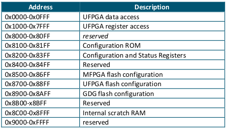
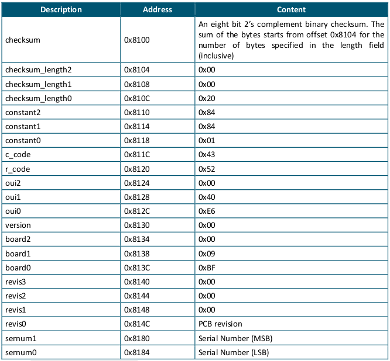
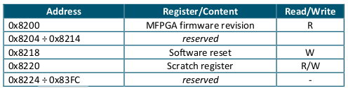
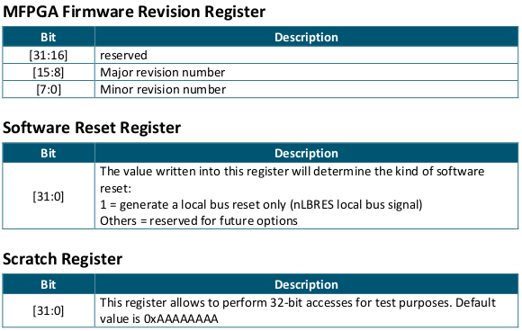

系统固件¶
CAENUpgrader¶
CAENUpgrader allows to perform the following operations on the DT5495 board:
Upgrade the MFPGA firmware
Load the User firmware on the UFPGA
Verify the Main and User FPGA firmware
Read the release number of the MFPGA firmware
Store and get the Product Unlock Code in case of paid firmware
Get the Board Info file (useful in case of support requests)
Get Main FPGA Firmware¶
The following instructions allow to read the release number of the MFPGA firmware:
Select the “Get Firmware Release” option in the Board tab.
Select the “V2495” item in the Board Model combo box.
Set the connection parameters according to your communication link and hardware setup.
Press the Get FW Rel button. The software displays the release number in a message window.
Upgrade Main FPGA Firmware¶
The MFPGA firmware can be downloaded from CAEN website at the DT5495 web page: The firmware file is available in Altera RPD format.
The following instructions allow to upgrade the MFPGA firmware:
Select the “Upgrade Firmware” option in the Board tab.
Select the “DT5495” item in the Board Model combo box.
Set the connection parameters according to your communication link and hardware setup.
Select the MFPGA by checking the relevant checkbox.
Select the Main application firmware RPD file.
Press the Upgrade button. The outcome of the upgrade process is shown in a message window.
Power cycle the board to reconfigure the MFPGA with the firmware just updated on the flash. Please refer to Sect. Power-on Configuration Sequence to check the outcome of the process.
Upgrade User FPGA Firmware¶
The UFPGA demo firmware projects are available on CAEN website at the DT5495 web page.
User demo firmware or custom user firmware can be recompiled and the generated RPD file can be uploaded into the FLASH memory of the User FPGA.
The custom or the Demo RPD firmware file can be uploaded only on the application 1 page of the USER FPGA FLASH of the DT5495!
The following instructions allow to upgrade the UFPGA firmware: - Select the “Upgrade Firmware” option in the Board tab. - Select the “V2495” item in the Board Model combo box. - Set the connection parameters according to your communication link and hardware setup. - Select the UFPGA by checking the relevant checkbox. - Select Application 1 as the only supported target application image. - Select your User firmware or a CAEN Demo firmware RPD file. - Press the Upgrade button. The outcome of the upgrade process is shown in a message window.
At the end of the upgrade process, the CAEN Upgrader will force a reconfiguration of the UFPGA from the selected userapplication image.
Address Map¶
The DT5495 board can be accessed via both Ethernet and USB interface. All registers are accessible from both communication interfaces.
The following table illustrates the DT5495 address map:
User FPGA Data Access¶
The UFPGA data access space is allocated specifically for the readout of data produced in the UFPGA logic which need to exploit the maximum readout throughput available. This space can be accessed by using the available block transfer mechanism over the Ethernet or USB communication interfaces.
Block data transfer allows to implement a faster readout. Block transfers requests over Ethernet or USB do not trigger any transfer over the internal local bus between the MFPGA and UFPGA: a data prefetch mechanism, implemented in the MFPGA, stores User data into a local data queue (prefetch data queue). Consequently, data from the UFPGA data access space are read from the prefetch data queue in the MFPGA.
User FPGA Register Access¶
UFPGA register address range is allocated for User register read/write.
A read or write transfer (single cycle) can be triggered on the local bus by performing a corresponding read transfer in the 0x1000-0x7FFF address interval.
The local bus master in the MFPGA acts as a transparent bridge between the communication interface (ETH/USB) and the local bus in this interval. A couple of examples are given to illustrate the transparent bridge behaviour.
Configuration ROM¶
Only the 8 LSBs of each location of the Configuration ROM are significant.
Note: The oui0/1 fields represent CAEN Manufacturer identifier (IEEE OUI), which is equal to 0x40E6.
Note: The board serial number can be read with two accesses: if the serial number on the module front panel is 1245(hex 0x4DD), for instance, the Serial Number’s MSB (0x8180) will be 0x04, while the Serial Number’s LSB (0x8184) will be 0xDD.
Configuration and Status Registers¶
 Flash Configuration¶
This address range is reserved to flash remote programming.
Note: access to the FLASH is through the provided functions of the PLULib library.
Internal Scratch SRAM¶
This area is available either for test access or for volatile data storage. Any address in this interval is implemented by an internal RAM location.